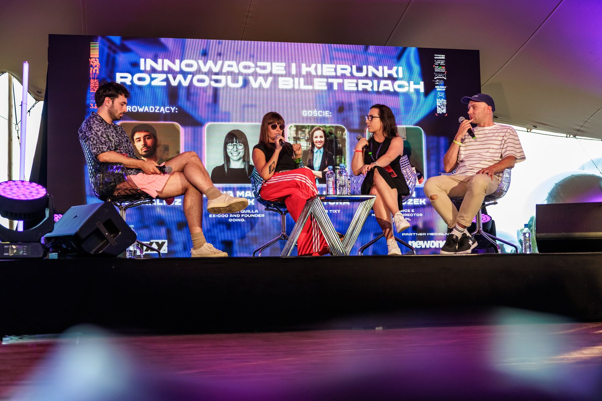
01 · 2015–2023
Going.
Od startupu do jednej z czołowych bileterii w Polsce.
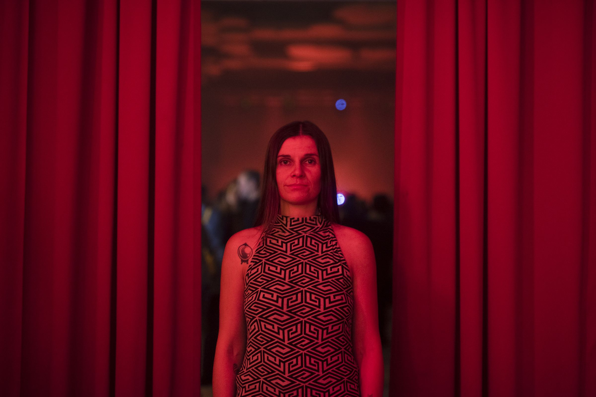
Od kreacji i biznesu po scenę i kasę.
Cześć, jestem Anka!
wydarzeń, lekko szacując
lat w branży
W większym lub mniejszym stopniu działałam przy – lekko szacując – ~50.000 wydarzeń. Jak to możliwe?
Jestem współzałożycielką w 2015 bileterii Going., którą pożegnałam w 2023. A już wcześniej organizowałam wydarzenia w całej Polsce (sprawdź cykl koncertów zagranicznych gwiazd World Wide Warsaw oraz zloty food trucków Żarcie Na Kółkach).
W ostatnich latach współpracowałam m.in. z managementem Maty przy jego rekordowej trasie w 2025 oraz dwóch koncertach na PGE Narodowym, czy przy koncercie JIMKA na Bemowie dla ponad 50.000 osób. Do tego aktywnie działam przy sponsoringu m.in. dla Festiwalu Rapstacja, czy klubu Warsaw Padel Club.
Moje praktyczne wieloletnie doświadczenie, znajomość rynku, szeroka perspektywa biznesowa i umiejętność łączenia właściwych ludzi to zestaw, który efektywnie pomoże Ci rozwiązać codzienne problemy: od drobnych - bo kluczowe. Nie obiecuję osobistego wykonywania każdej specjalistycznej usługi, choć w miarę możliwości chętnie się podejmę. Co na pewno zrobię: do każdej potrzeby dobiorę i skoordynuję właściwe środki, narzędzia i ekspertów z rynku.
Projekty

01 · 2015–2023
Od startupu do jednej z czołowych bileterii w Polsce.
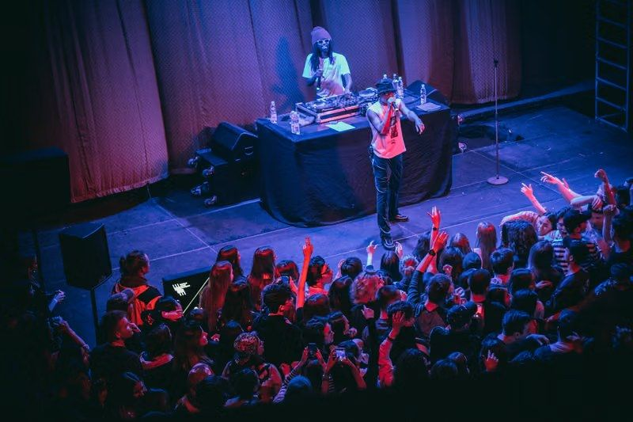
02 · 2016–2018
Światowe nazwiska na warszawskich scenach.
Rejjie Snow, WWW 2018. Foto: Paweł Zanio, materiały własne artysty
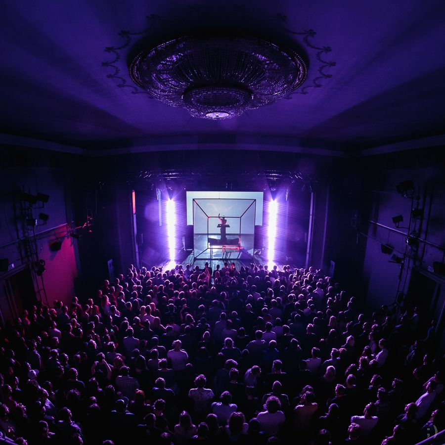
03 · 2015
Organizacja 360.
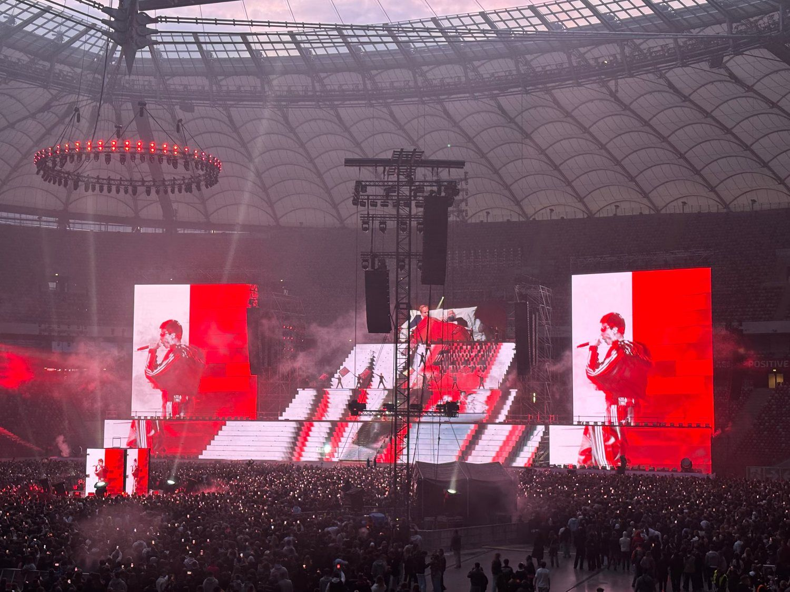
04 · PGE Narodowy
Wsparcie ticketingowe, obsługa VIP.
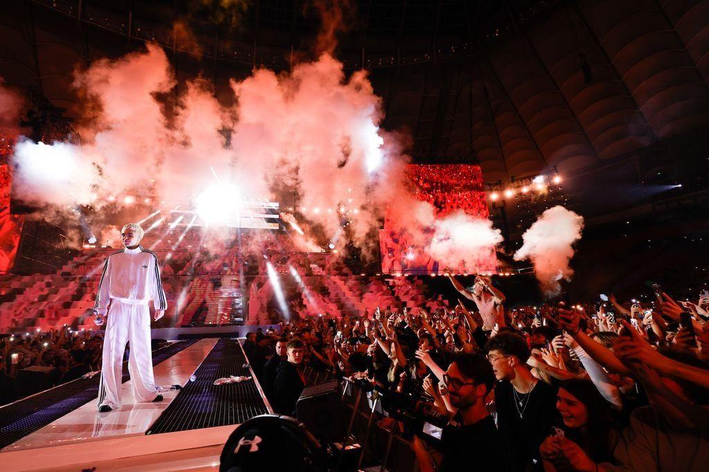
05 · 2025
Współpraca projektowa z managementem.
Foto: Michał Murawski, materiały prasowe
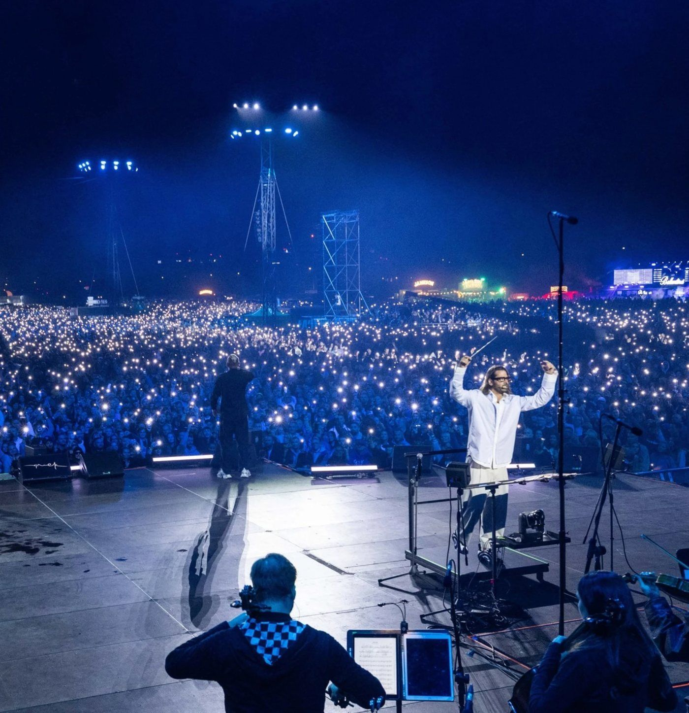
06 · 2021 i 2023
Koordynacja, nadzór, partnerzy.
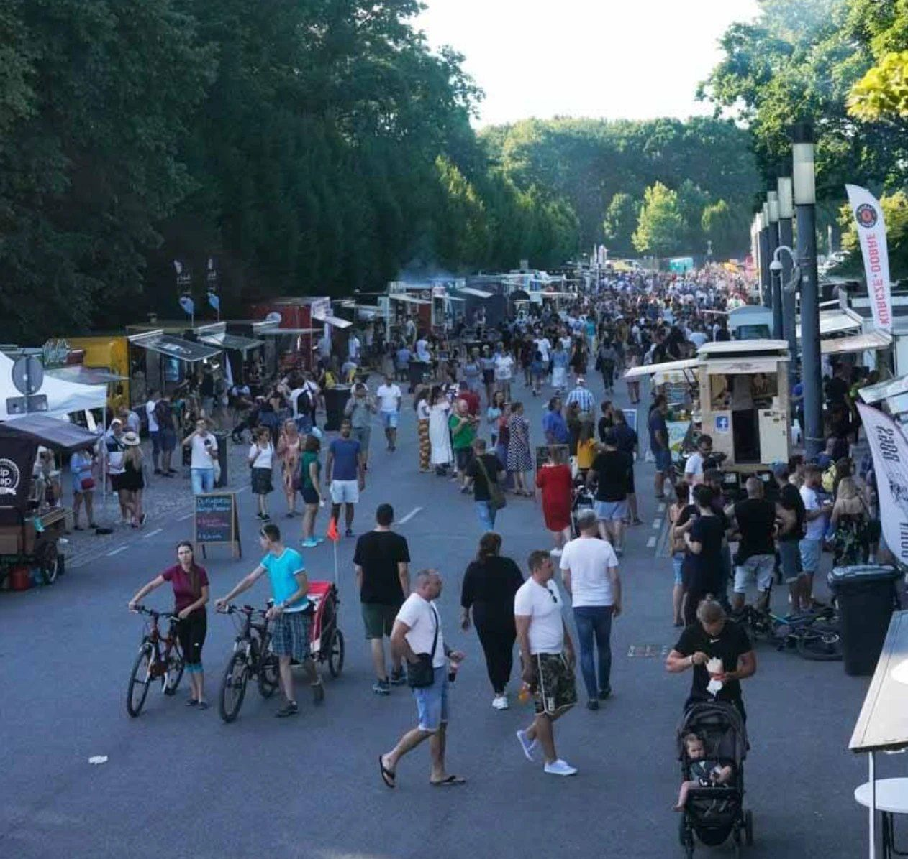
07 · Projekt autorski
Zloty food trucków w całej Polsce, rozwijane przez lata.
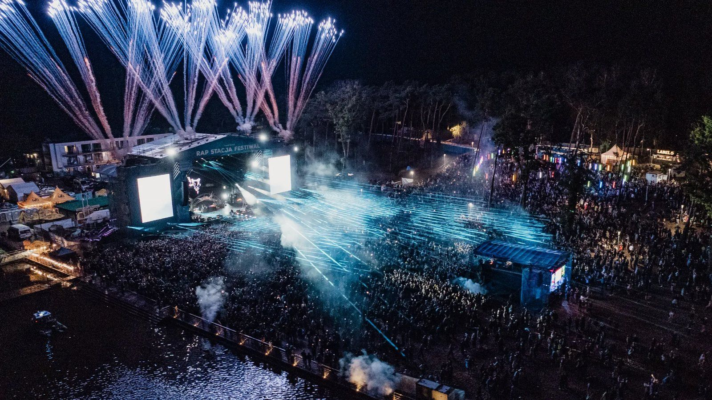
08 · Sponsoring
Festiwal, sponsoring.
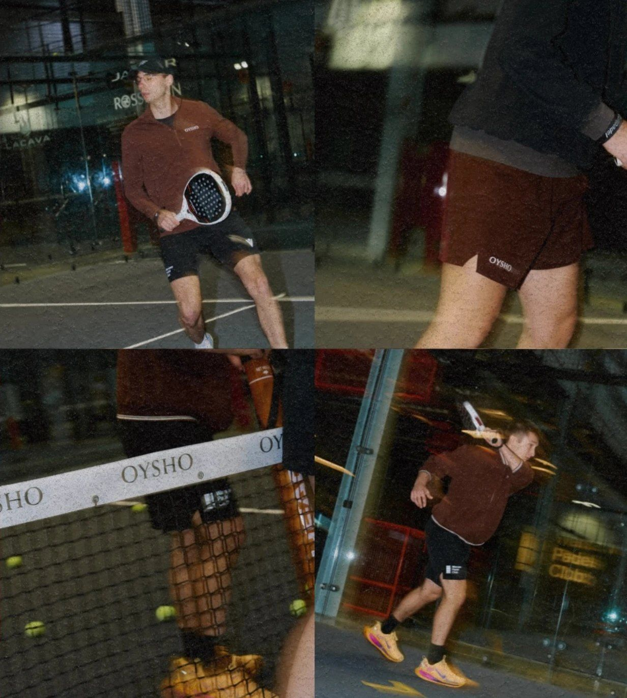
09 · Sponsoring
Sponsoring, partnerstwa i wydarzenia.
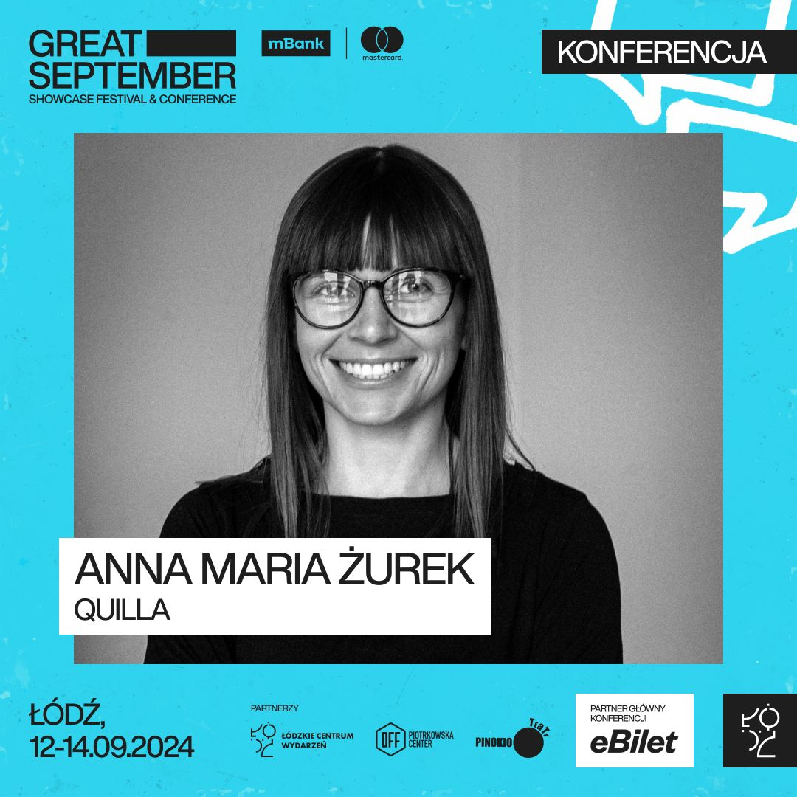
10 · Technologia
Rozwój narzędzi i koncepcji technologicznych dla rynku muzycznego.
Za każdym wydarzeniem stoi jakaś historia – moja historia trwa już ponad 20 lat.
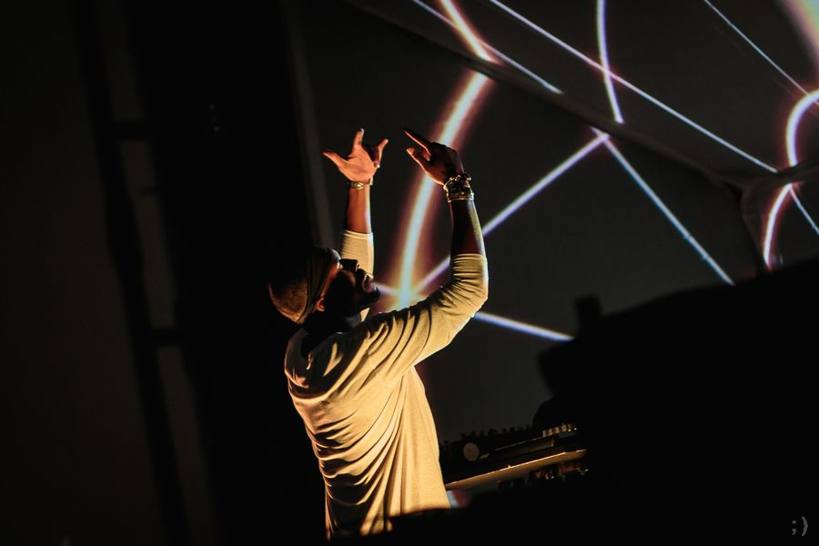
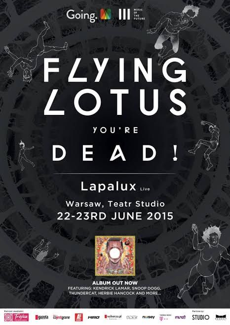
Początki to mniejsze bookingi DJskie w legendarnych nieczynnych już klubach takich, jak 1500m2 do wynajęcia czy Pogłos lub BASEN Artystyczny – wraz ze wspólnikami odkrywaliśmy artystów, zanim stali się światowymi gwiazdami.
Po kilku latach płynnie przeszłam do organizacji masowych produkcji wypełniających największe obiekty koncertowe w Polsce.
Przez lata współtworzyłam World Wide Warsaw, sprowadzając do Polski nazwiska, które dziś wyznaczają kierunki światowej muzyki. Organizowałam kameralne koncerty, nieoczywiste wydarzenia i spektakularne widowiska. Od Flying Lotusa w Teatrze Studio po Matę na PGE Narodowym i JIMKA na Stadionie w Chorzowie i Lotnisku Bemowo.
Znam tę branżę od podszewki po ostatni sznyt: booking, koncepcja, promocja, sprzedaż, produkcja i budżet.
Lubię dzielić się wiedzą. Szczególnie z ludźmi, którzy – podobnie jak ja – wiedzą, że za każdym koncertem stoją nie tylko emocje, ale też liczby, decyzje, ryzyko i całkiem sporo nieprzewidzianych zwrotów akcji.
Regularnie biorę udział w konferencjach i dyskusjach branżowych. Rozmawiam o sprzedaży biletów, ekonomii wydarzeń, nowych technologiach, danych i przyszłości rynku muzycznego. Czasem jako panelistka, czasem prowadząca, zawsze z perspektywy praktyczki.
Można mnie było spotkać m.in. na Great September, Next Fest, Akademii Popkillerów, MusicTech Poland i wydarzeniach Venture Café Warsaw.
Pomagam, właścicielom obiektów, artystom i firmom rozwijać projekty, rozwiązywać problemy i znajdować nowe możliwości. Od ponad 20 lat działam w branży wydarzeń z każdej strony sceny: sprzedaży i biznesu.
Nie musisz wiedzieć, jakiej dokładnie usługi potrzebujesz. Opowiedz mi, co chcesz zrobić albo co nie działa. Resztę się ogarnie.
Z tym, co widać, i z tym, czego nie widać.
Sponsoring · wybrane marki sponsorskie, z którymi współpracowałam projektowo
Superbet VISA CCC Converse Dr Witt OYSHO Pernod Ricard CEDC glo Plus Oshee Decathlon Perła T-Mobile
Dla kogo?
Organizatorzy koncertów i festiwali • agencje • kluby i obiekty • artyści i ich zespoły • marki i sponsorzy • dostawcy usług • twórcy nowych firm i produktów • inwestorzy zainteresowani branżą.
Jeśli działasz w branży wydarzeń muzycznych i kulturalnych, od masowych po niszowe: pogadajmy! Wybierz termin rozmowy, opowiesz mi, nad czym pracujesz.
P.S. Zastanawiasz się, co znaczy LEBOLBAT? To całkiem niezła historia.